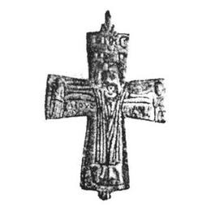
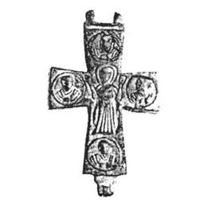

Catalog › CE-0228 · KOR2003-I.1.12
Encolpion cu Răstignire și adstanți pe față, Orantă și patru evangheliști pe revers
sec. XI–XII (1001–1200) · Hmelnița, regiunea Cernihiv, Ucraina · Muzeul-rezervație din Cernihiv, secția de arheologie
double-sided reliquary cross (enkolpion), aramă; c. XI–XII (1001–1200); found at Hmelnița, regiunea Cernihiv, Ucraina; kept at Muzeul-rezervație din Cernihiv, secția de arheologie.




Identificare
- Categorie
- Encolpion bivalv (relicvar)
- Material
- Aramă
- Tehnică
- Turnare în relief; Gravare (incizie)
- Dimensiuni
- Î 85 × L 60 mm
Iconografie
- Avers
- Răstignirea (Hristos în colobium); Sf. Ioan
- Descriere avers
- Encolpion cu capete dreptunghiulare, ușor lărgite, cu imagini în relief retușate cu dalta. Pe față imaginea lui Hristos răstignit, în colobium, pe fondul lemnului crucii evidențiat, cu suppedaneum și tăbliță; pe laturi figurile adstanților, Maica Domnului și Sf. Ioan Evanghelistul. Sub mâinile lui Hristos inscripție grecească adâncită (text din Evanghelia lui Ioan XIX, 26, 27). Deasupra Răstignirii simbolurile soarelui și lunii.
- Revers
- Maica Domnului Orantă; Evangheliști în medalioane
- Descriere revers
- Imaginea centrală a Maicii Domnului Orantă este completată cu patru imagini bust ale evangheliștilor în medalioane la capetele valvei, însoțite de litere.
- Limba
- Greacă
Datare și atribuire
- Datare
- sec. XI–XII (1001–1200)
- Centru
- Necunoscut
- Tipologie
- Korzukhina–Peskova 2003, tip I 1
Descoperire
- Localitate
- Hmelnița
- Regiune
- regiunea Cernihiv
- Țară
- Ucraina
- Context
- Așezare
- Anul
- 1980
Păstrare și referințe
- Colecție
- Muzeul-rezervație din Cernihiv, secția de arheologie
- Bibliografie
- G. F. Korzukhina, A. A. Peskova, Древнерусские энколпионы. Нагрудные кресты-реликварии XI–XIII вв., Sankt-Petersburg, 2003 [Korzukhina–Peskova 2003], p. 46, cat. nr. I 1/12, reprodusă la Табл. 2 (planșe, p. 244). Bibliografie citată în sursă: Шекун 1981, 321–322, рис. на с. 322; Веремейчик 1992, 51.
- Figura
- Табл. 2
- Planșe
- Korzukhina–Peskova 2003, Табл. 2 (planșă fără paginație proprie în PDF; p. 244 tipărită)
- Observații
- Datare după Peskova: sec. XI–XII. Circumstanțe: Săpături 1980 la așezarea rusă veche Lanok, sub conducerea lui A. V. Șekun. Dimensiuni: h 8,5 cm cu balamalele. Coordonate: nu sunt date în sursă.
Citare: Corpus Encolpiorum, CE-0228, Encolpion cu Răstignire și adstanți pe față, Orantă și patru evangheliști pe revers, https://vitaliejosanu1979-ux.github.io/primul-meu-proiect/piese/KOR2003-I.1.12/ (accesat 2026-10-17).